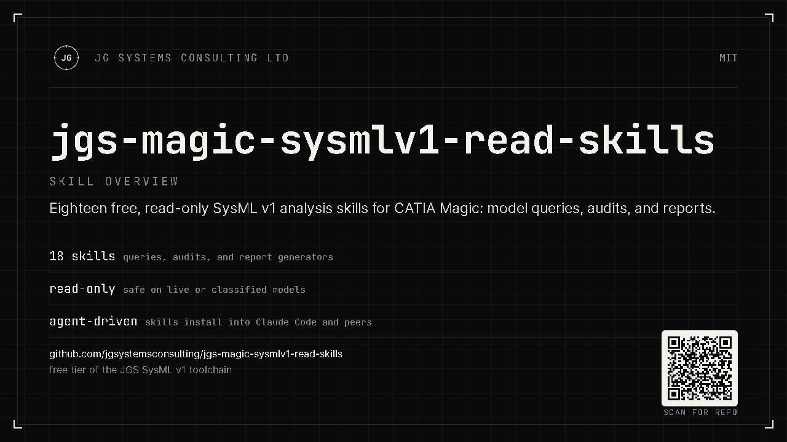

Read-only by design
Every skill calls the FREE tier of the bridge. No writes, ever: your model is never modified.
JG Systems Consulting Ltd. · CATIA Magic MCP
Inherited a sprawling SysML v1 model and no idea where to start? Point your AI agent at it.
These 18 free, read-only skills navigate, inspect, search, audit,
and report on live SysML v1 models in CATIA Magic, driven by one command, /jgs-v1,
in plain English. No licence key. No cloud. And because every skill is read-only, they can
never change your model.

§01 · What it is
A bundle of focused Claude Code skills that read your model through the jgs-magic-sysmlv1-mcp bridge, locally, with nothing sent anywhere. It's the zero-risk way to put AI to work on real MBSE: try it on your toughest model and see what it finds before you commit to anything.
Every skill calls the FREE tier of the bridge. No writes, ever: your model is never modified.
/jgs-v1 routes plain-English requests to the right specialist and flags what only PRO can do.
Talks only to your local bridge. The model stays inside CATIA Magic: no cloud, no export.
§02 · What the 18 skills do
/jgs-v1Dispatcher: routes any request to the right specialist.
/jgs-v1-navigateStructured overview: packages, element counts, diagram inventory.
/jgs-v1-inspectDeep-dive one element: type, ports, relationships, requirement links.
/jgs-v1-searchFull-text search with ranked, typed hits.
/jgs-v1-impactBlast-radius analysis before you change a shared element.
/jgs-v1-auditSix-specialist health audit with severity-graded findings.
/jgs-v1-reportShareable model-health report + Requirements Traceability Matrix.
/jgs-v1-fixplanTurns audit findings into a read-only remediation plan.
…plus the audit specialists (naming, docs, requirements, duplicates, unused, methodology), /jgs-v1-diagrams, /jgs-v1-units, and /jgs-v1-status. 18 in total: see SKILLS.md.
§03 · How it works
Open a SysML v1 project in CATIA Magic with the jgs-magic-sysmlv1-mcp bridge running (FREE tier).
/jgs-v1 I just inherited this model: what am I looking at? The dispatcher picks the specialist.
Get a structured overview, an element dossier, an audit report, or an RTM, all read straight from the live model.
First run and every invocation pattern, with prerequisites and worked examples: the skill usage guide.
§04 · Works with your agent
The skills ship in the open SKILL.md format. The installer targets seven
agents, copied natively where supported and auto-transformed where not.
Native, flat ~/.zcode/skills.
Native, the default target.
Native SKILL.md.
Native SKILL.md.
Auto-transformed to a prompt.
Auto-transformed to a TOML command.
Auto-transformed to a project rule.
Pick a target with --agent. See other-agents.md.
§05 · Install
Prerequisite: the jgs-magic-sysmlv1-mcp bridge installed and running (its FREE tier is enough), with a SysML v1 project open in CATIA Magic.
# clone, then install for Claude Code (default) python install.py # preview first, or install for another agent python install.py --dry-run python install.py --agent all
Skills install flat for short-name discovery (/jgs-v1). Restart your agent afterwards.
Go further
These free skills analyse your model. To have your agent change it (create requirements, wire allocations, fix the findings this pack surfaces, draft diagrams), add a PRO licence to the bridge. Same air-gapped, local setup; full write access.